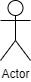
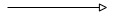
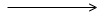
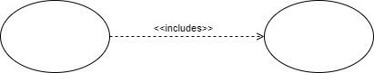
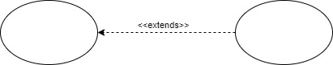

Here is some information about the more common symbols that are used in a use case diagram.
Actors 
Actors are people or devices that directly interact with certain functionalities of the system. Each actor has one or more goals that they wish to achieve through the system. Although actors do showcase the systems functionality, actors aren’t necessarily individual users. Actors, instead, represents a class of external entity relevant to a specific use case. Each actor can be played by multiple users, or all can be played by one.
Use Case 
Use cases describe a function that a system performs to achieve an actor’s goal. They are also traceable back to a functional requirement of the system. Each use case must have a unique name that describes the action that the system performs.
Generalization 
As described in the class diagram, generalization is used to represent inheritance. It typically starts from the child use case and points at the parent use case. There can be multiple children for a parent use case.
Association 
Association relationships add to an existing relationship between two use cases. This means that this third class is just to add more information to their connection. A good example would be to go back to our pizza order system, and we could add an association class called "cashier" this could be a handler that also prints a receipt based on the information between the two classes.
Includes 
Include relationship is a relationship in which one use case explicitly includes the functionality of another use case.
Extends 
Extend relationship specify that one use case extends the behavior of another use case. They can represent exceptional or seldom invoked cases.